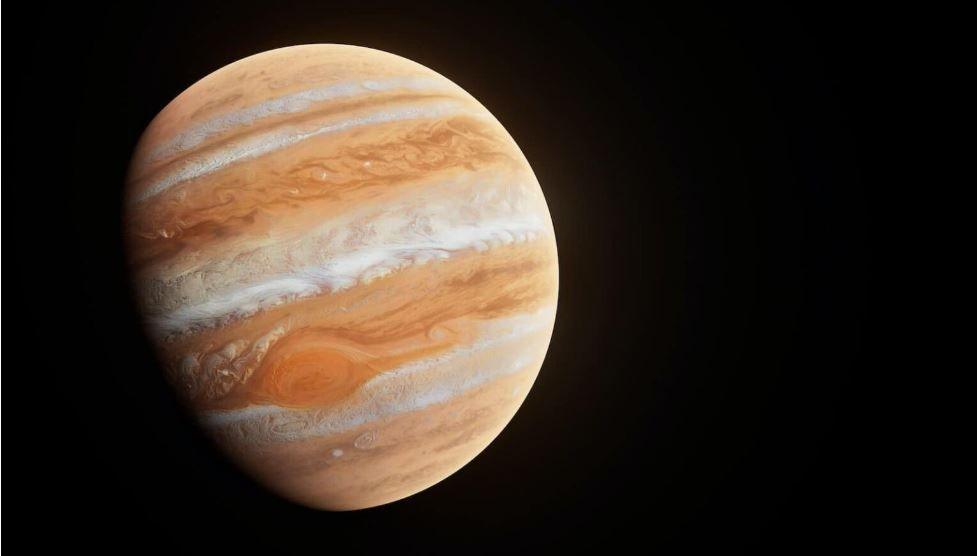
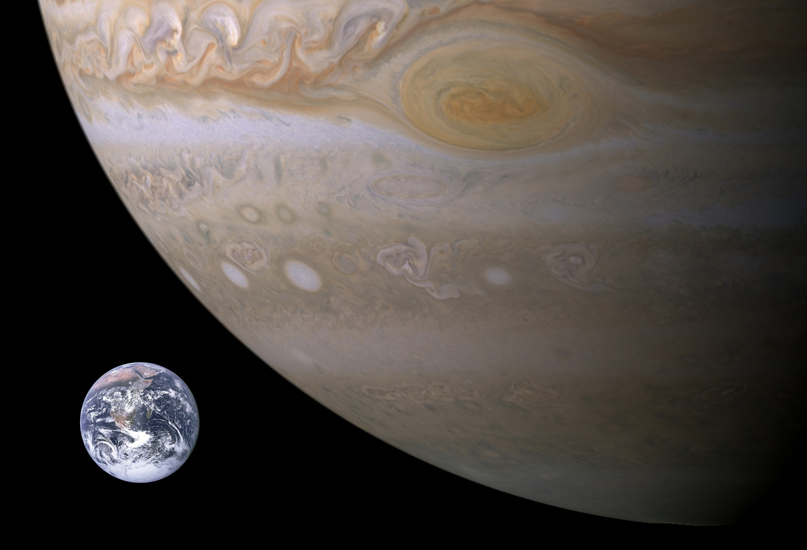
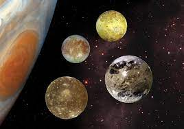

Юпитер сега
- Факти
- Числа
- Изследване
- Луни
-
Факти за юпитер
Юпитер е най-голямата и най-старата планета в нашата Слънчева система.Ако Юпитер беше куха черупка, 1000 Земи биха могли да се поберат вътре. Юпитер има най-краткия ден в Слънчевата система, отнема само 10,5 часа, за да се завърти веднъж около оста си.
Научи повече за Юпитер
 -
Числа
Колко голям е Юпитер? Колко далеч е от Слънцето?Използвайте този инструмент, за да сравните Юпитер със Земята и други планети.
Анализирай и Сравни
 -
Изследване на Юпитер
Първите подробни наблюдения на Юпитер са направени от Галилео Галилей през 1610 г. с малък, самоделен телескоп.Съвсем наскоро тази планета е изследвана от орбитални апарати, сонди и космически кораби, преминаващи покрай нея на път към други светове. Космическият кораб Juno на НАСА в момента изучава гигантската планета от орбита. Europa Clipper стартира на 14 октомври 2024 г., за да изследва ледената луна на Юпитер, Европа.
Повече за мисиите на Юпитер
-
Луни на Юпитер
Юпитер има 95 луни, които са официално признати от Международния астрономически съюз.Но числото не отразява сложността на системата от луни, пръстени и астероиди на Йовиан. Гигантската планета има хиляди малки обекти в орбитата си.
Още за Луните на Юпитер

10 неща, които трябва да знаете за Юпитер
01
Най-голямата планетаЕдинадесет Земи могат да се поберат през екватора на Юпитер. Ако Земята беше с размерите на грозде, Юпитер щеше да е с размерите на баскетболна топка. |
02
Петата планета от нашата звездаЮпитер обикаля на около 484 милиона мили (778 милиона километра) или 5,2 астрономически единици (AU) от нашето Слънце (Земята е на една AU от Слънцето). |
03
Къс ден/Дълга годинаЮпитер се върти веднъж на всеки 10 часа (ден на Йовиан), но са му необходими около 12 земни години, за да завърши една орбита около Слънцето (година на Юпитер). |
Юпитер и Йо |
04
Какво има вътреЮпитер е газов гигант и затова му липсва земна повърхност. Ако изобщо има твърдо вътрешно ядро, вероятно е с размерите на Земята. |
05
Масивен свят, леки елементиАтмосферата на Юпитер се състои предимно от водород (H2) и хелий (He). |
06
Светове в изобилиеЮпитер има повече от 75 луни. |
07
Опръстенен святПрез 1979 г. мисията "Вояджър" откри слабата система от пръстени на Юпитер. И четирите гигантски планети в нашата слънчева система имат системи от пръстени. |
08
Изследване на ЮпитерДевет космически кораба са посетили Юпитер. Седем прелетяха и двама обиколиха газовия гигант. Juno, най-новият, пристигна на Юпитер през 2016 г. |
09
Съставки за живот?Юпитер не може да поддържа живота такъв, какъвто го познаваме. Но някои от луните на Юпитер имат океани под кората си, които може да поддържат живот. |
10
Супер буряГолямото червено петно на Юпитер е гигантска буря, която е около два пъти по-голяма от Земята и бушува повече от век. |
Голямо червено петно |